من الثمرة
لقطات قريبة تشرح النضج واللون ولماذا يؤثر الحصاد اليدوي على الطعم.
رحلة عميقة في عالم القهوة: اكتشف قصة كل حبة من الغابات الإثيوبية إلى فنجانك
حيث تبدأ الحكاية في غابات إثيوبيا البعيدة
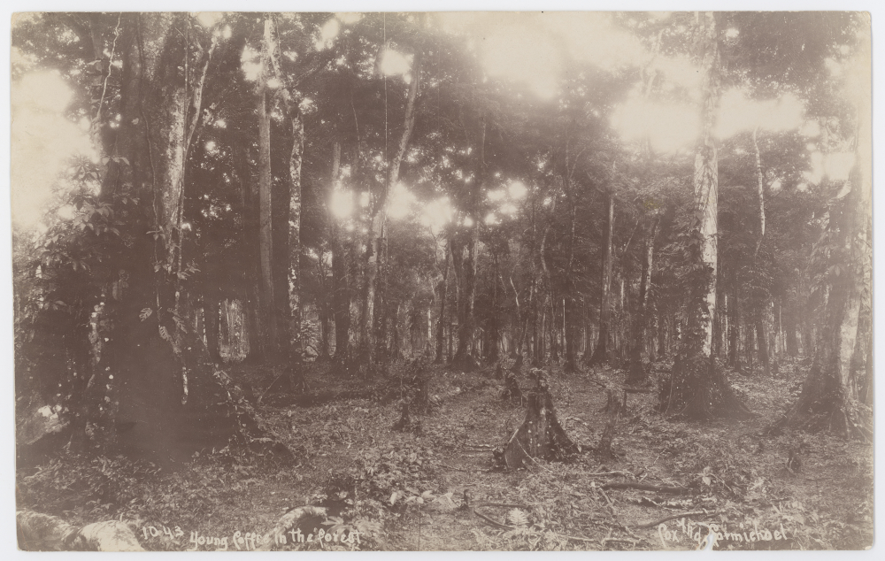
في أثيوبيا، البن ينمو برياً في الغابات الجبلية، محاطاً بالضباب والنباتات الاستوائية النادرة.
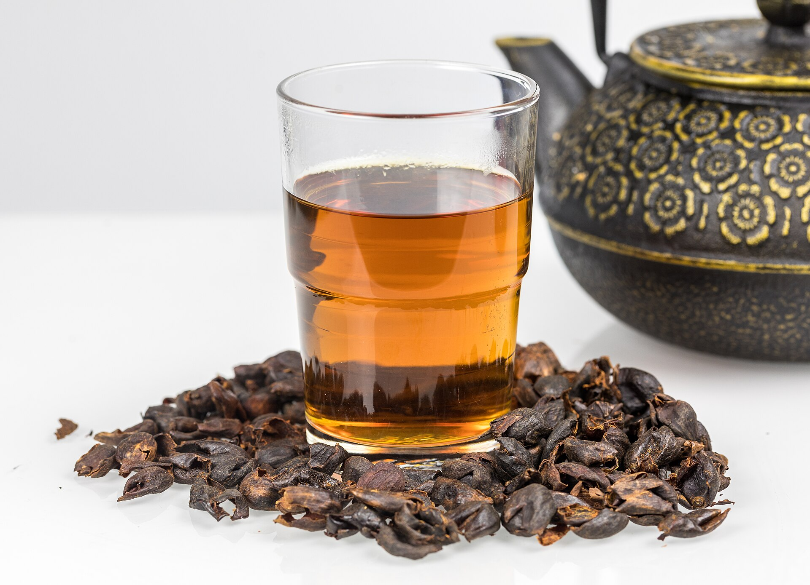
تشبه الكرز الأحمر الناضج، كل ثمرة تحتوي على بذرتين مختبئتين في لب حلو ولذيذ.
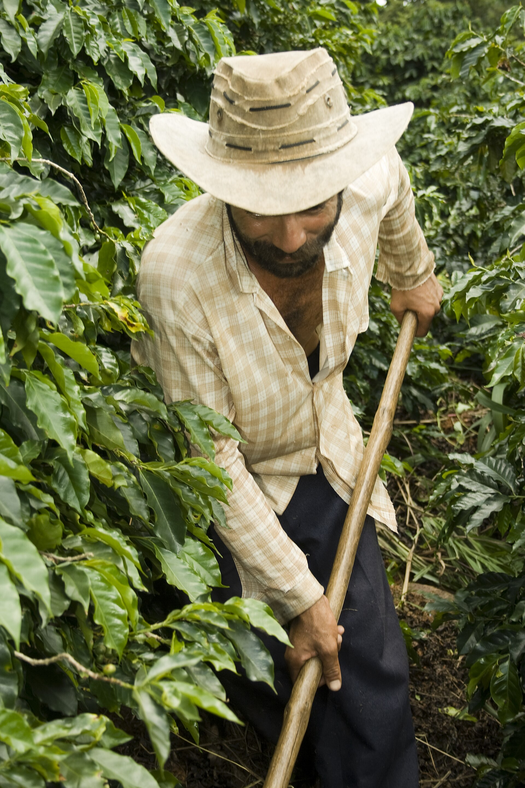
تناقل الأجيال فن الحصاد التقليدي، حيث كل خطوة محقونة بالحب والخبرة والثقافة العميقة.
اليد التي تغذي العالم بالذهب البني
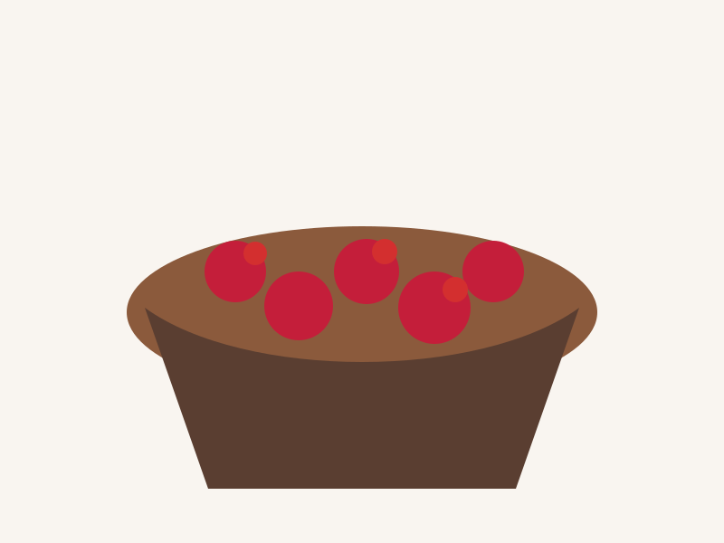
حملة البن اليوميةالقهوة لا تُحصد بسهولة — كل حبة تُختار يدوياً بعناية فائقة. المزارع يعرف متى تكون الثمرة جاهزة تماماً.
هل تعرف؟ القهوة ليست حبة... إنها فاكهة!
القهوة ليست حبة... إنها ثمرة فريدة! تحتوي على لب حلو، قشرة حمراء براقة، وبداخلها بذرتان. اللون الأحمر الناضج يشير إلى الوقت المثالي للحصاد.
نكهة حامضة وقاسية جداً
حلاوة مثالية — الوقت المناسب للحصاد
نكهة مرّة وخسارة كبيرة للجودة
أربع طرق، مئات النكهات المختلفة
تجفيف الثمرة كاملة تحت الشمس الحارقة
إزالة اللب والجلد قبل التجفيف
تجفيف مع بعض اللب اللزج
تخمير مغلق في حاويات مختومة
مرحلة التصنيف والجودة
بعد المعالجة والتجفيف، تُفحص حبات البن بعناية فائقة. يتم تصنيفها حسب الحجم، اللون، والعيوب. فقط الحبات المثالية تستحق الرحلة إلى مقهاك.
أعلى جودة — عالي الارتفاع
ممتازة — متوازنة
جيدة — قابل للشرب
عادية — قياسية
اختر دولة لاستكشاف نكهاتها الفريدة والمميزة
الأصل والمهد
أكبر منتج عالمي
عالية الجودة والتنوع
حموضة مشرقة وثمارية
الأصناف المتخصصة والنادرة
التراث والندرة التاريخية
الاستقرار والجودة المضمونة
الارتفاع والتعقيد العميق
أربعة أنواع رئيسية تحكم العالم
الملك الأول
60% من القهوة العالمية. نكهات معقدة وحموضة جميلة.
الملايين العشاقالمحارب القوي
40% من الإنتاج. أكثر كافيين، جسم أقوى، طعم أرضي.
قوي وسريعالنادرة
أقل من 2% من الإنتاج العالمي. نكهة خشبية وفحمية فريدة.
ندرة وتميّزالمجهولة
نادرة جداً. نكهات فريدة ومعقدة، جسم خفيف.
سر جميلالفن الذي يحول الحبات الخضراء إلى ذهب بني
التحميص هو السحر الحقيقي. نفس الحبات الخضراء تُحمّص في درجات حرارة مختلفة لأوقات مختلفة، فتنتج نكهات مختلفة تماماً!
حموضة عالية جداً
نكهات أصلية من الأصل
توازن كلاسيكي
جسم متوسط
جسم قوي
نكهات متوازنة
نكهات شوكولاتة
جسم كامل جداً
حلاوة مرتفعة
نكهة مدخنة عميقة
دقة الحجم = دقة الطعم
الطحن الصحيح هو نصف المعركة. كل طريقة صب تحتاج حجم طحن مختلف.
للإسبريسو والتركي
للقهوة الفرنسية
للـ V60 والـ Chemex
للفرنش برس
للـ Cold Brew
السحر يحدث تحت الضغط
الإسبريسو ليس مجرد قهوة سريعة — إنه علم دقيق جداً. 9 بار من الضغط، ماء 90 درجة، 25-30 ثانية من الاستخراج = كوب مثالي.
9 بار = 9 أضعاف وزن الجو
90-92 درجة مئوية
25-30 ثانية استخراج
طبقة الزهب الذهبية
الرغوة المثالية = متعة الشرب
تبخير الحليب ليس سهلاً كما يبدو. يجب أن تصل إلى microfoam المثالية — رقيقة وناعمة وحريرية.
في البداية
شفط الهواء
فقاعات كبيرة
كمال الرغوة
طرق متعددة، تجارب مختلفة، نكهات فريدة
صب يدوي دقيق
3-4 دقائق | تحكم عالي
أناقة وطعم سلس
4-5 دقائق | جمال عالي
جسم كامل وعميق
4 دقائق | غمر كامل
سرعة وطعم نظيف
1-2 دقيقة | ضغط يدوي
إيطالية تقليدية
5-7 دقائق | حنين
ناعمة وحلوة
12 ساعة | صبر
حيث يصبح الطعم نقاشاً احترافياً
التذوق الاحترافي (Cupping) هو فن وعلم. نفس البن تُتذوق بطرق موحدة وموضوعية، وتُعطى درجات دقيقة.
55 درجة مئوية
8-10 دقائق
ملعقة موحدة
100 درجة
حيث يلتقي الفن بالتنافس
بطولات الباريستا العالمية (WBC) تجمع بين أفضل الحرفيين. 15 دقيقة، مشروبات 4، جودة استثنائية، وفن لاتيه.
رسومات جميلة
الكمال النقي
الإبداع الشخصي
العرض والقصة
من الفن إلى الأرباح
فتح مقهى ليس مجرد حلم رومانسي — إنه عمل. تحتاج مهارات، استثمار، وخطة ذكية.
بن جيد أولاً
أرباح ذكية
باريستا متقنون
بناء المجتمع
لقطات أطول من قلب التدريب: مزرعة، معمل، تحميص، صب، ومنافسة
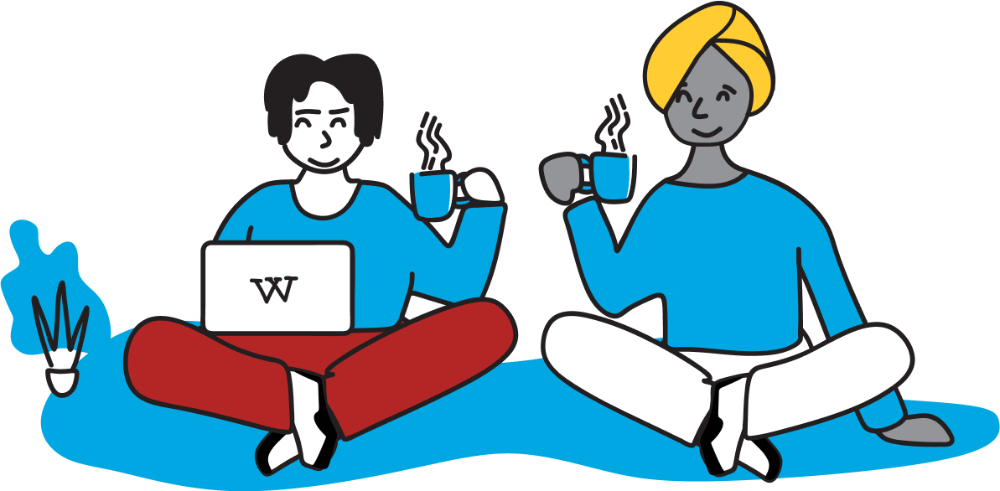
الصور هنا تجعل الأكاديمية أطول وأوضح: الطالب لا يقرأ فقط عن القهوة، بل يرى لون الثمرة، ملمس البن الأخضر، لحظة التحميص، وسريان الإسبريسو في الكوب.
لقطة تعليمية داخل المسار
مراحل من المزرعة إلى الفنجان
تركيز على التطبيق العملي
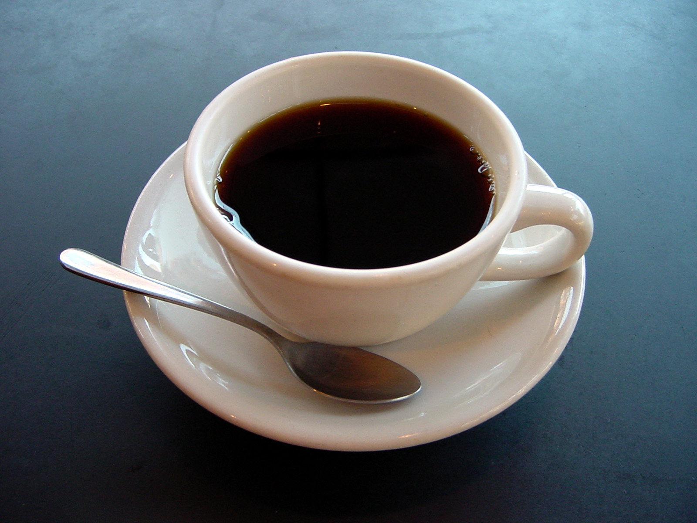
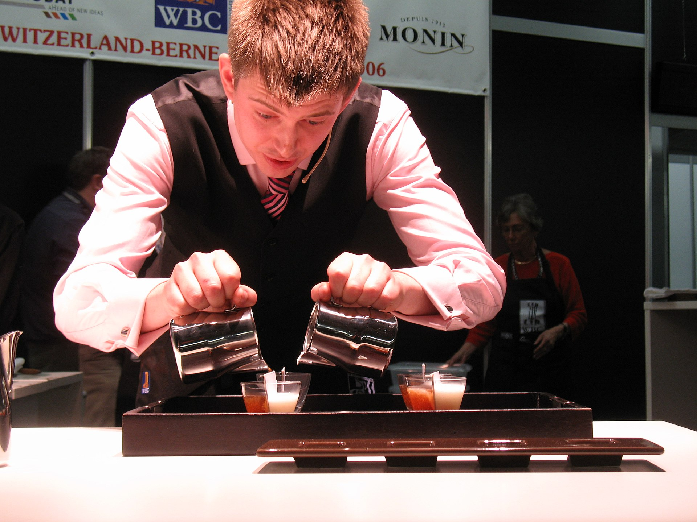
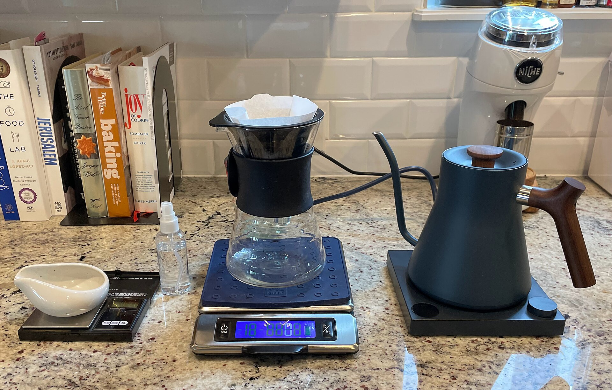
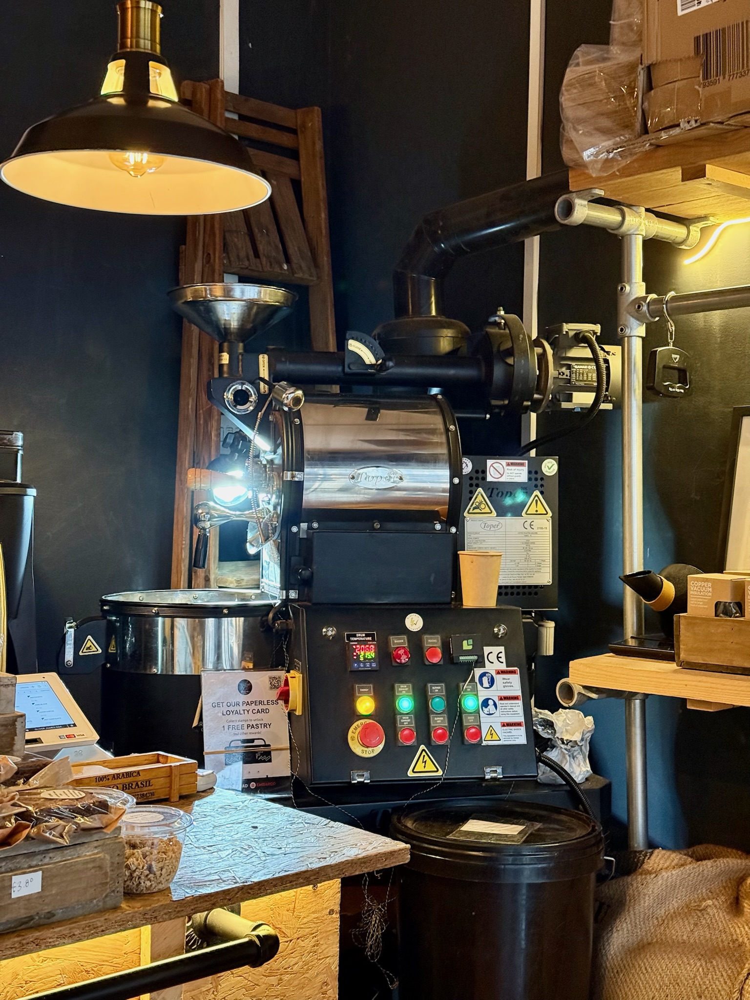
لقطات قريبة تشرح النضج واللون ولماذا يؤثر الحصاد اليدوي على الطعم.
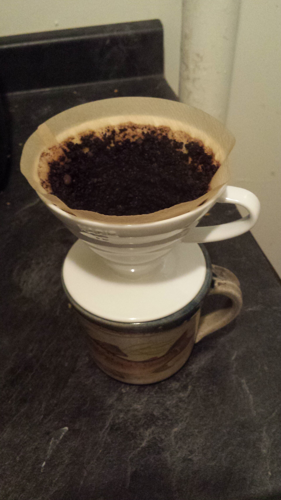
صور خطوة بخطوة للطحن، الوزن، الماء، والوقت حتى يرى الطالب أثر كل قرار.
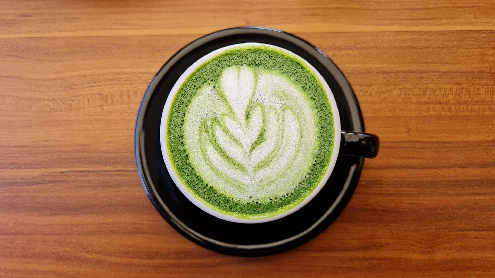
لقطات نهائية لفن اللاتيه، الكريما، وقوام المشروب قبل التقديم.
من الفضول الأول إلى الخبرة العميقة — مسار تفاعلي مدعوم بصور وميدانية
الدارس لا ينتقل من مستوى لآخر بالاسم فقط. كل مرحلة لها موقف، خطأ يتعلم منه، أداة يتقنها، ولحظة صغيرة يشعر فيها أن القهوة بدأت تتكلم بلغة مفهومة.
يمسك الطالب ثمرة قهوة للمرة الأولى، يفتحها، ويكتشف أن القهوة فاكهة قبل أن تكون حبة. هنا يتغير سؤاله من “كيف أشربها؟” إلى “كيف وصلت إلي؟”.
يبدأ في تسجيل الرائحة، درجة الطحن، وقت الصب، وملاحظات الطعم. مع كل تجربة يصبح لديه ذاكرة حسية لا تعتمد على الحفظ فقط.
بعد محاولات كثيرة، يرى الإسبريسو ينساب ببطء ولون متوازن. يتعلم أن اليد الهادئة والنظافة والوزن الدقيق ليست تفاصيل صغيرة.
يجلس مع زملائه أمام أكواب متشابهة، ثم يكتشف أن كل كوب له شخصية مختلفة. هنا يبدأ في وصف النكهة بثقة وهدوء.
لا يكرر وصفة جاهزة فقط، بل يشرح لماذا اختارها وكيف سيعدلها لو تغير البن أو الماء أو درجة التحميص.
في النهاية يصبح قادرًا على تعليم غيره: يصحح بدون توتر، يشرح بدون تعقيد، ويحوّل القهوة من مهارة فردية إلى خبرة مشتركة.
لقطات: منظر بيئي، أيقونة badge، لقطات ماكرو للـ cherry
لقطات: تعليمية، طالب يتعلم، دفتر ملاحظات، badge progress
لقطات: يد تعمل على آلة، بورتافلتر، تدريبات ميلك/لاتيه
لقطات: cupping table، ضبط تحميص، فحص عينات
لقطات: قيادة فريق، إعداد مسابقات، صور بورتريه قيادية
لقطات: مدرب يشرح، ورشة عمل، شهادات وتقديم
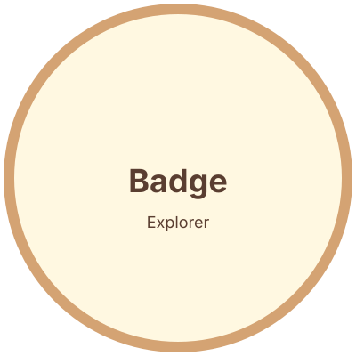
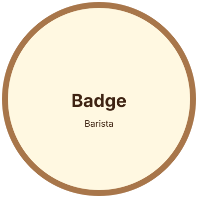

الصور هنا هي نُسخ اختبارية محلية — استبدلها بصور حقيقية عالية الدقة وفق `shot-lists.md` لإضفاء الطابع الوثائقي الحقيقي على المسار.
اختبر معرفتك واحصل على شهادة إتمام لكل مستوى
10 أسئلة • 15 دقيقة • 70% نجاح
10 أسئلة • 15 دقيقة • 70% نجاح
10 أسئلة • 15 دقيقة • 70% نجاح